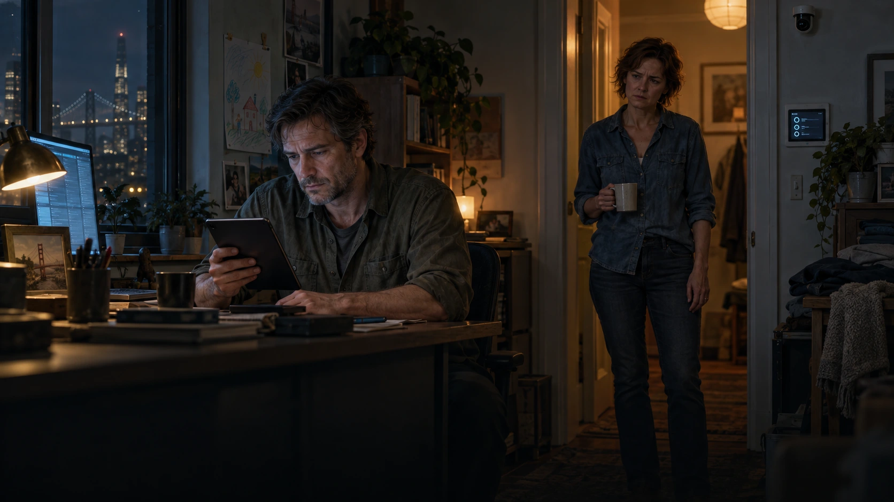
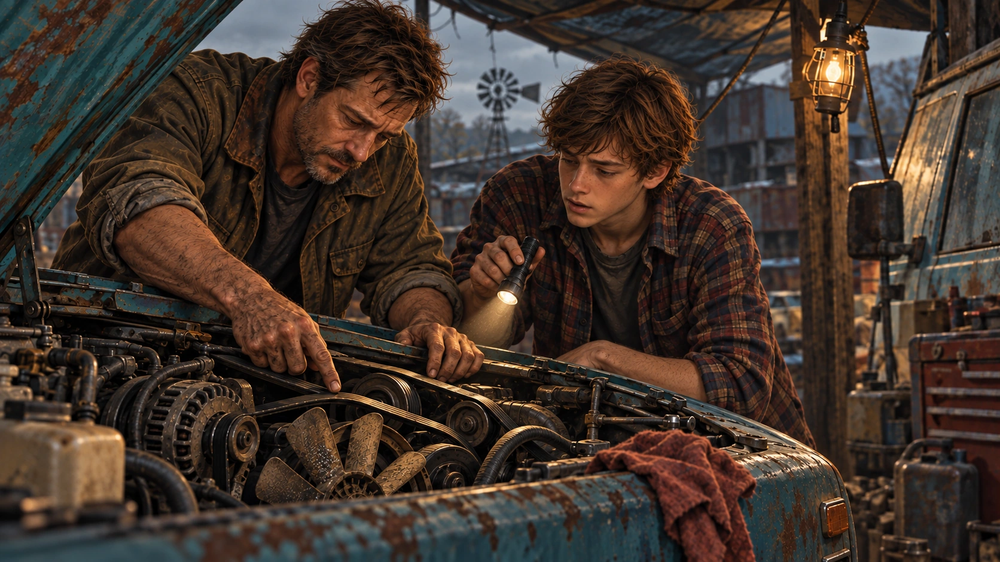
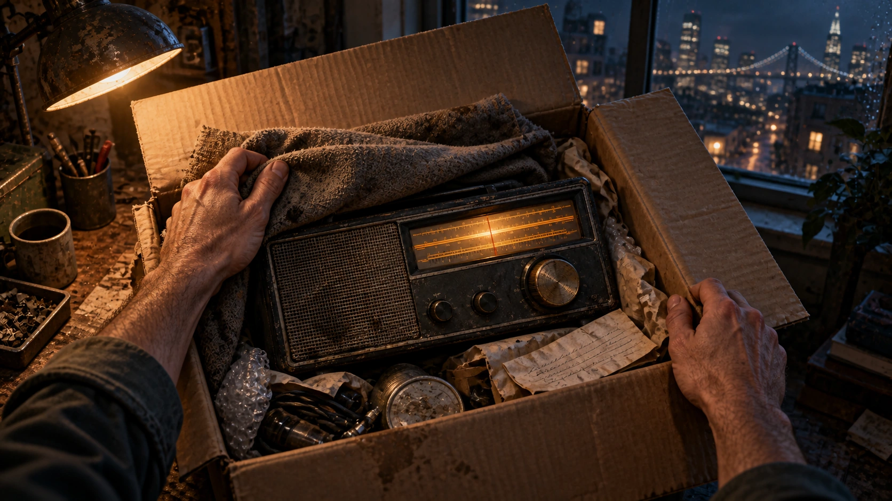
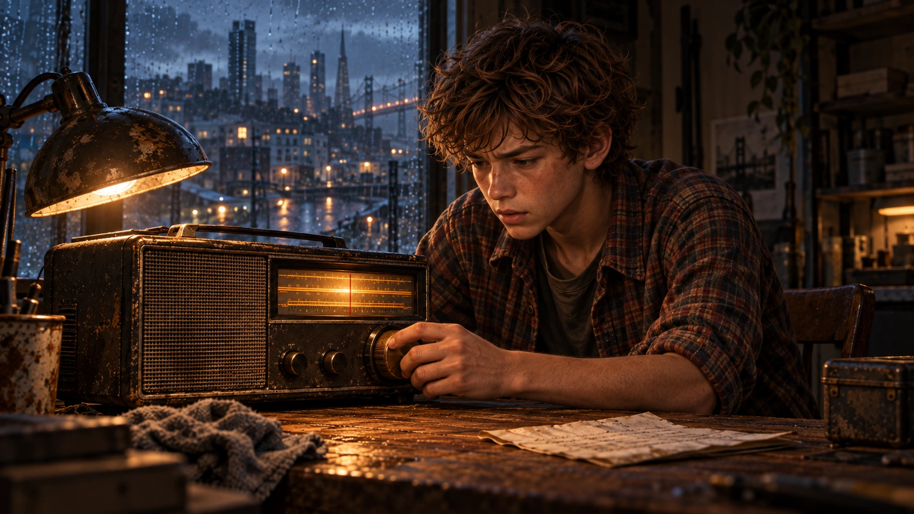
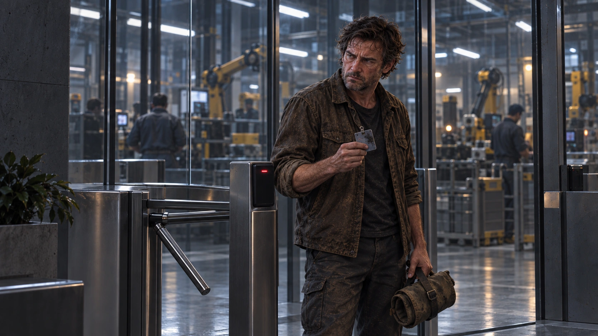
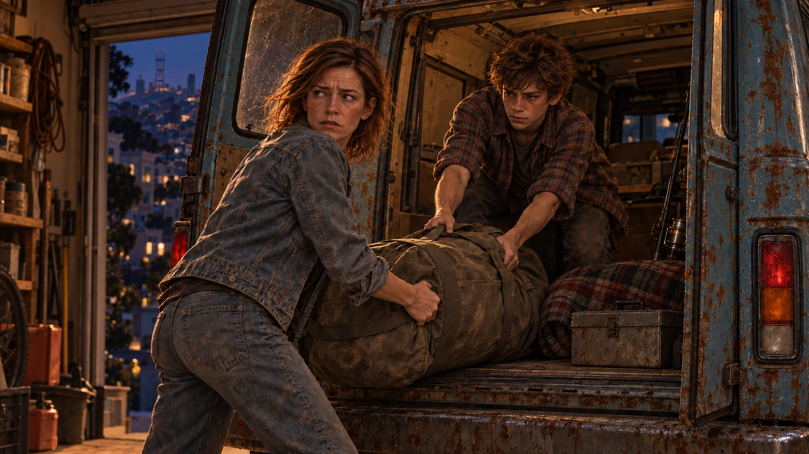
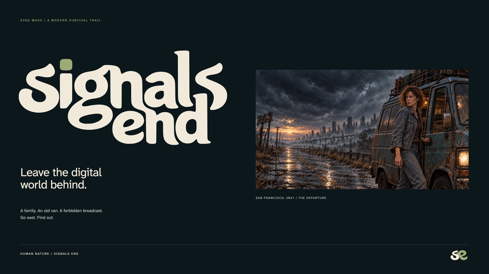
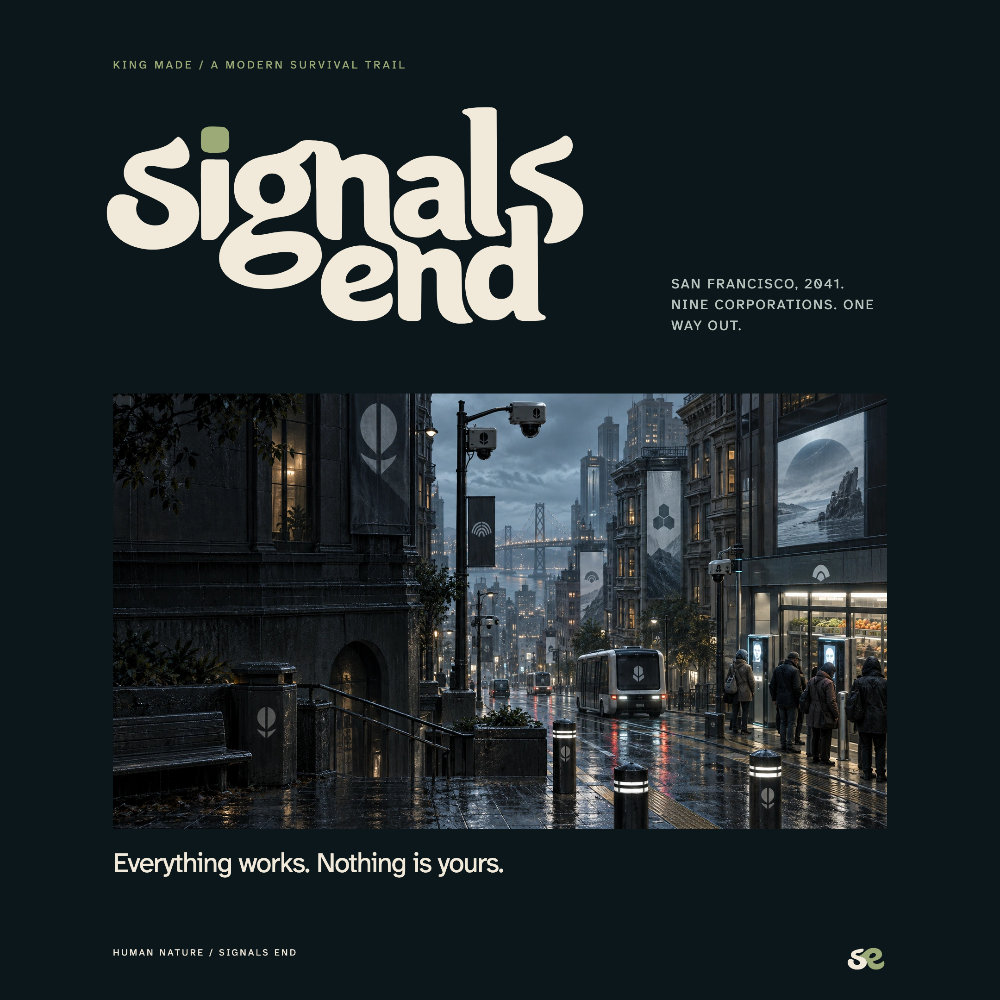
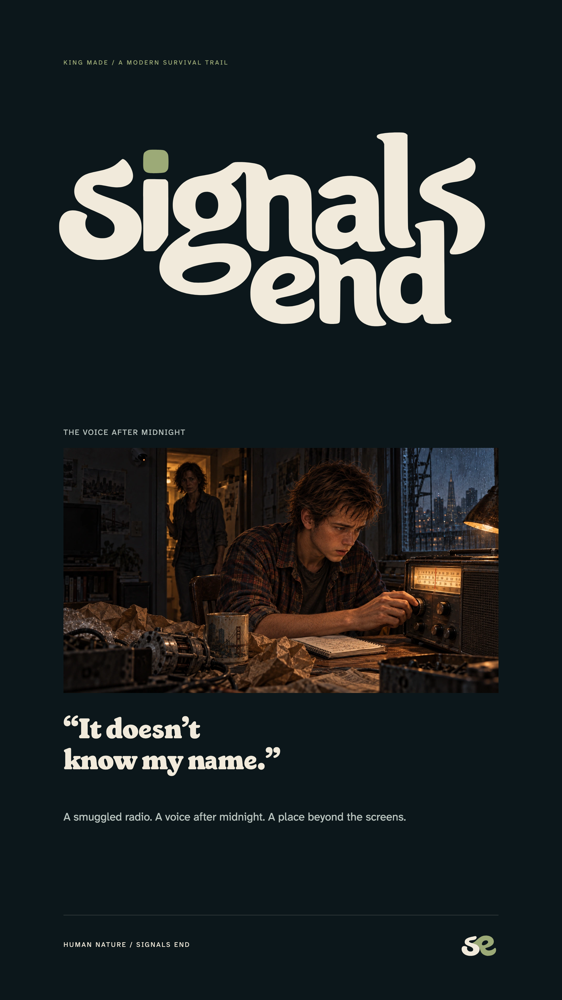

ID
Identity & access“You, verified.”
One government record links your face, household, social credit standing and service access. Cameras check who is present; missing data can start a review. Its coverage has gaps.

A family. An old van. A forbidden broadcast.
San Francisco, 2041. Nine mandatory apps control daily life. Government decisions are increasingly automated.
The rent rises. Food gets dearer. Taxes and mandatory fees eat the rest. Your door, your work and your medicine need permission.
Jack keeps checking work after his shift. Sarah repeats herself. Annie waits with a drawing. He wants a simpler life. Neither parent believes one is still possible.
A low social credit score can lock wages, groceries and travel. The balance still exists. You cannot spend it.
Bea hides a receiver. Ben carries it past inspection and repairs it. Sarah hears the distant voice with him.
Three nights of arguments. Jack is fired for refusing an unsafe sign-off. His employer report lowers their score. Funds lock; the flat is due back at dawn.
Mandatory public apps. Private contractors. Government rules, increasingly applied by AI.
One government record links your face, household, social credit standing and service access. Cameras check who is present; missing data can start a review. Its coverage has gaps.
Wages, payments and deductions pass through a joint wallet. An adverse employer report through Work can lower household social credit below the access threshold and lock funds before a person reviews the report.
Occupancy, rent and chipped appliances share the household record. A job-linked flat can expire before the appeal about that job is heard.
One shared ID. Restrictions propagate in seconds; human appeals take days. Private employers and contractors still act. A score measures compliance, not goodness. Surveillance has gaps.
Mandatory public apps. Private contractors. Government rules, increasingly applied by AI.
Stocked stores accept Cash payments authenticated through ID. A low social credit score locks the wallet and means no groceries. Independent traders outside the system still accept paper money, work and barter.
Private employers report jobs, hours and disputes here. Government rules turn adverse reports into social credit restrictions. Assigned restoration shifts and compliance review are the official way to earn access back. The supervisor has gone home; the consequences keep arriving.
Contracted clinics must check automated eligibility before treatment. Sarah can see what a patient needs and still be unable to authorize it.
One shared ID. Restrictions propagate in seconds; human appeals take days. Private employers and contractors still act. A score measures compliance, not goodness. Surveillance has gaps.
Mandatory public apps. Private contractors. Government rules, increasingly applied by AI.
Utilities and licensed machinery require registered computer control modules and active permissions. Unconnected devices are prohibited; possession can trigger a credit review. A repairable pump can be disabled because its service contract expired.
Transit, tolls and travel permissions use ID. A camera can close the fast lane to your van; an unmonitored county road may still be open.
Automated credit restrictions and relocation orders are enforced by contracted Collector crews. Human contractors put people in vehicles; the order arrives through an app.
One shared ID. Restrictions propagate in seconds; human appeals take days. Private employers and contractors still act. A score measures compliance, not goodness. Surveillance has gaps.
One 24-unit geometric family. Use the same symbol on a screen, a building or a vehicle. Atkinson labels; no decorative game lettering. Never use color alone to show status. Original outlined SVG lockups and 1024 px PNG tiles are included in apps/.

BEN MERCER / AFTER MIDNIGHT
Ben carries the concealed receiver home and fixes its battery contact and aerial. Sarah hears the Ozark voice first. Jack listens the following night.
They argue for three nights. Jack’s employer fires him on the fourth morning. Their money freezes; their flat is due back at dawn. Sarah says to load the van.
The first step is an inquiry. No invitation or guaranteed home. The receiver does not transmit their location.
A broadcast. Three nights of debate. Then a firing, frozen wages and an urgent departure.
Bea sends a private family question through freight-radio contacts.
June shows a recent photo of Uncle Frank. First corroboration.
A courier records Frank’s answer. A home and entry agreement become credible.
Repair Glenn’s pump or carry filters. Useful work builds trust.
Meet Frank. Face the storm. Read the rules. Decide whether to cross.
Repair. Fish. Trade. Evade. Keep one another going.
Never reveal a confirmed reservation before North Platte. Freight radio moves the inquiry ahead of the van. The paper transcript is evidence, not an instant travel permit.

THE OZARKS / STORY SPOILERS
No phones, computers or digital products. The council follows the same rule.
Electricity, mechanical engines and analog radio remain. A guarded reservoir basin survives through terrain, water, useful infrastructure and relationships.
Cash, barter and paid work need no account. Low taxes are posted at the hall. Homes, leased plots and building lots offer a future.
PRIMARY / APPROVED TITLE

COMPACT / THE SIGNATURE
The SVG is the title master. Do not recreate it by typing the name. No apostrophe.
One dot-height around the title; a quarter of the symbol’s height around the compact mark.
Title: 180 px. Horizontal: 160 px. Symbol: 24 px. Use monochrome below 32 px.
SIGNALS END DISPLAY
Aa Bb Cc Dd Ee Ff Gg Hh Ii Jj
Kk Ll Mm Nn Oo Pp Qq Rr Ss
Tt Uu Vv Ww Xx Yy Zz
0123456789 & ? !
Short headings, 26 px and up. A renamed Fraunces derivative with fourteen adapted glyphs. Full source and OFL license included.
ATKINSON HYPERLEGIBLE NEXT
Jack calls that a warranty. Sarah asks which century it expires in.
You have food for a day and a name written on paper. Nobody promised this would work.
0 O / 1 I l / 5 S / 8 B
16-19 px for story and choices. 14 px supporting text. 12 px short labels. Film captions: Atkinson 600. Reserve the wordmark for the final title.
#17282B
#0C171B
#F1EADB
#9CAA77
#C88068
#D0B479
Ink, night, pale institutional light. A maintained system that exhausts the people inside it.
Paper, sage and small pools of lamplight. Warmth is earned through human action.
Rust marks danger. Always add an explicit label or symbol; never color alone.
Paper on Ink: 12.8:1. Ink on Sage: 6.1:1. Preserve dark text on the sage primary action.

Jack checks work. Sarah waits for him to listen. Two people, different thoughts, one ordinary evening.

One action, one tool, believable hands. Let attention and competence carry the scene.
Leave room for fear, irritation, curiosity and wonder.
Do not repeat the whole family in every frame. No stock-photo smiles or uniform despair. Detail stays sharp in the subject; atmospheric softness belongs in the distance. Inspect native sources before enlarging.




Separate illustrated actions and reactions. Hold the camera still; let rain, light, radio and software supply motion. The named joint-wallet restriction follows Jack’s dismissal. The earlier grocery customer is unrelated to the Mercers.
INVITATION
ATTITUDE
REWARD
The institutions speak in helpful euphemisms. People speak plainly. The joke comes from a character; hardship is never the punchline.
Show a hungry person, a stocked shelf and a face scanner. Do not explain a specialized software job.
Title reveal: 850 ms fade and a 16 px upward settle at 1080p. Hold after arrival. The 2.5-second MP4 is silent.
Hold illustrated scenes at a fixed scale. Use distinct shots and local rain, light or interface motion. Reduced motion shows the completed state.
The game opens with a separate 232-second illustrated story film. Captions use Atkinson Hyperlegible Next; the approved wordmark closes the film. No voiced performances.



LANDSCAPE
3840 x 2160
SQUARE
2160 x 2160
PORTRAIT
2160 x 3840
Large editorial layouts preserve native-scale space for 1672 x 941 illustrations. The title and live text render at the output resolution. Bigger export dimensions do not add detail to the painting. Campaign art does not replace required gameplay screenshots.
Outlined SVG marks and transparent PNGs.
Square game icons, including 1024 master.
Nine public-service symbols and lockups.
Installable TTF and WOFF2 fonts.
CSS, JSON and ASE color tokens.
Seven lossless core illustration masters.
Cinematic coverage in native-size WebP.
Campaign PNGs and editable HTML layouts.
Silent 1080p title reveal.
The story reference defines the nine institutions, the radio discovery, the evidence order and the refuge’s rules.
The exact logo artwork is authoritative. The current canon replaces earlier lease-led and AI-job-led stories. Earlier study files are process history.
Font licenses, source provenance, generation prompts and a SHA-256 manifest are included. Source art is 1672 x 941. The approved Human Nature study and all game illustrations were generated for this project; layout, vectors and motion were authored.